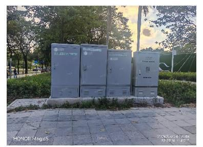
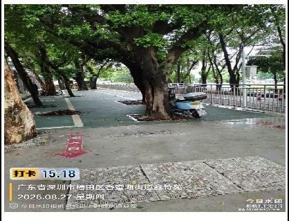
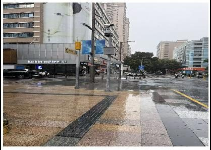
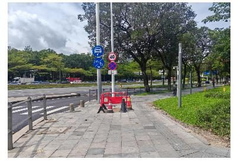
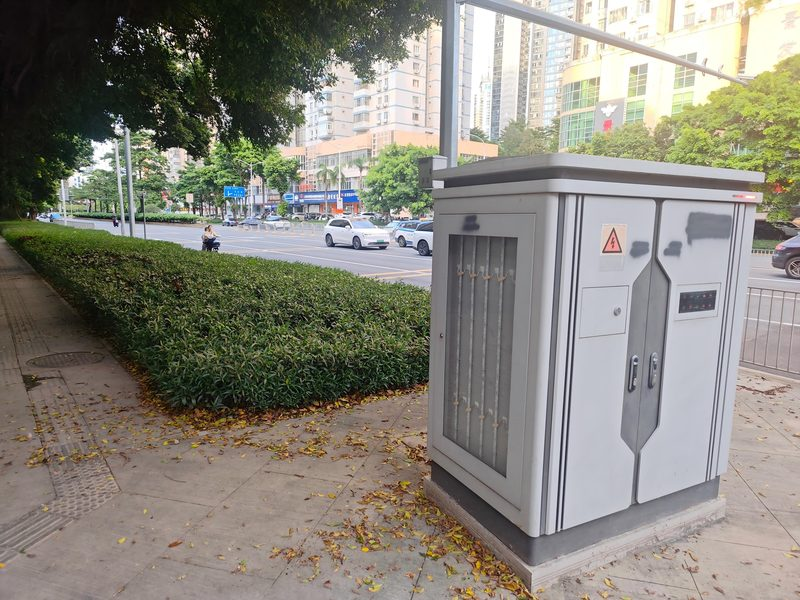
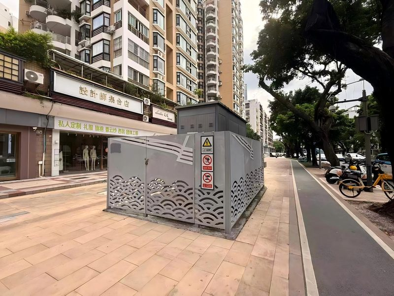
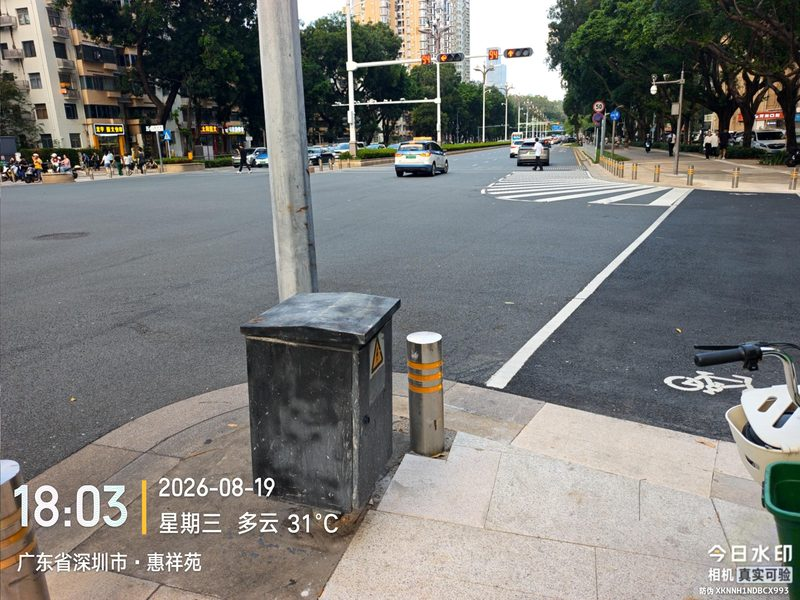

1判定标准
- 1明显占用人行道，存在交通安全隐患
- 2路口 10 米范围内箱体
⚠
硬性要求：十字路口、丁字路口箱体必须迁移，避开交叉口视距三角形。
2核心原则
A迁入绿化带做景观隐化——周边有绿化带时优先采用
B下地 / 上墙——周边无绿化带时研究实施，行业主管提供技术支持
C路口坚决迁移——避开视距三角形，保障行车视线安全
处置手法示例（点击放大）




3具体情形与处置方案
1-1周边有绿化带
优先迁入绿化带做景观隐化，与周边环境协调。
1-2周边无绿化带
研究下地、上墙方案，由行业主管部门提供技术支持。
1-3十字 / 丁字路口
必须迁移，坚决避开交叉口视距三角形。
三种情形的典型现场（点击放大）：



4违规与处罚依据
违规依据
禁止占用城市道路设置设施（经批准或按规划设置除外）。
·《深圳经济特区市容和环境卫生管理条例》第 21 条
·《深圳市城市道路管理办法》第 22 条：禁止擅自占用城市道路
·《深圳经济特区市容和环境卫生管理条例》第 21 条
·《深圳市城市道路管理办法》第 22 条：禁止擅自占用城市道路
处罚依据
责令改正，按每处设施处 5000 元以上 2 万元以下 罚款（依法应由交通运输部门查处的除外）。
·《市容和环境卫生管理条例》第 21 条
由道路主管部门强制拆除违法设施，可按每处处 5000 元以上 1 万元以下 罚款。
·《深圳市城市道路管理办法》第 47 条
·《市容和环境卫生管理条例》第 21 条
由道路主管部门强制拆除违法设施，可按每处处 5000 元以上 1 万元以下 罚款。
·《深圳市城市道路管理办法》第 47 条
审批依据
占用城市道路设置市政设施，应征得市或区道路主管部门和规划主管部门同意。
·《深圳市城市道路管理办法》第 27 条
·《深圳市城市道路管理办法》第 27 条
执法主体
市交通运输部门、公安机关交通管理部门；道路主管部门。
ℹ
以上条文供执法与告知权属单位参考，属法律定性依据；具体处罚由对应主管部门依职权决定。
第一类 · 必须迁移
福田区占道箱体整治工作 · 分级分类指引